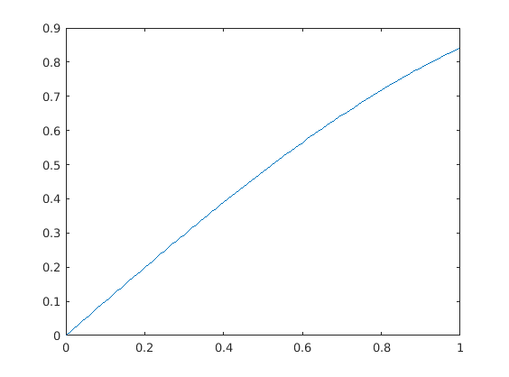

Example of replab usage
x =[0:0.01:1];
plot(x,sin(x));
n = 4;
Sn = replab.PermutationGroup.fromGenerators([2:n 1], [2 1 3:n]);
g = randperm(n);
disp(sprintf('We factor %s\n', num2str(g)));
w = Sn.factorization(g);
disp(sprintf('to obtain factor %s\n', w.str));
g1 = Sn.evaluateWord(w);
disp(sprintf('evaluated back to %s\n', num2str(g)));
assert(isequal(g, g1));
We factor 3 2 4 1
to obtain factor a b
evaluated back to 3 2 4 1
 disp('We use this to construct representations and evaluate them');
rho = Sn.naturalRepresentation;
g = randperm(n);
h = randperm(n);
gh = g(h);
rho.image(g) * rho.image(h)
rho.image(gh)
[subrho1 U1] = rho.isotypic.component(1)
[subrho2 U2] = rho.isotypic.component(2)
M = rho.centralizerAlgebra.project(rand(n,n))
blocks = rho.isotypic.blocksOf(M)
blocks{1}
blocks{2}
We use this to construct representations and evaluate them
ans =
0 0 0 1
0 0 1 0
0 1 0 0
1 0 0 0
ans =
0 0 0 1
0 0 1 0
0 1 0 0
1 0 0 0
Warning: Warning: qdimsum.jar not in the Java path, using Matlab code as
fallback.
subrho1 =
Unitary representation of dimension 1 with generator images
- a:
1
- b:
1
U1 =
0.5000
0.5000
0.5000
0.5000
subrho2 =
Unitary representation of dimension 3 with generator images
- a:
-0.29202 -0.90218 0.31748
0.75993 -0.017324 0.64977
0.58071 -0.43101 -0.69066
- b:
0.84623 -0.43871 0.30239
-0.43871 -0.2516 0.86269
0.30239 0.86269 0.40538
U2 =
-0.2181 0.5140 -0.6620
-0.6102 -0.6048 0.1091
0.7584 -0.3824 -0.1690
0.0698 0.4732 0.7220
M =
0.2859 0.4021 0.4021 0.4021
0.4021 0.2859 0.4021 0.4021
0.4021 0.4021 0.2859 0.4021
0.4021 0.4021 0.4021 0.2859
blocks =
[1.4923] [3x3 double]
ans =
1.4923
ans =
-0.1162 0.0000 0
0.0000 -0.1162 0.0000
0.0000 0.0000 -0.1162